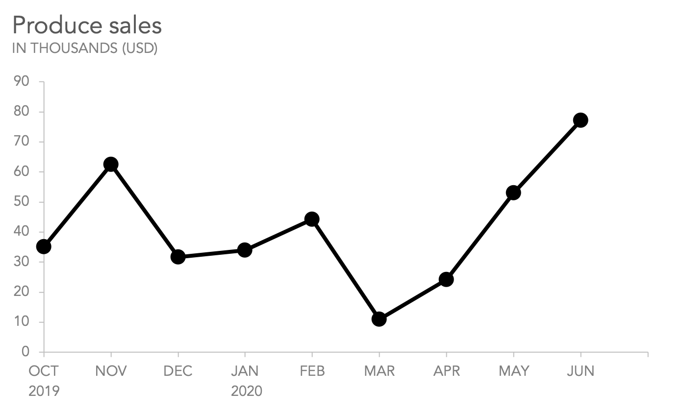
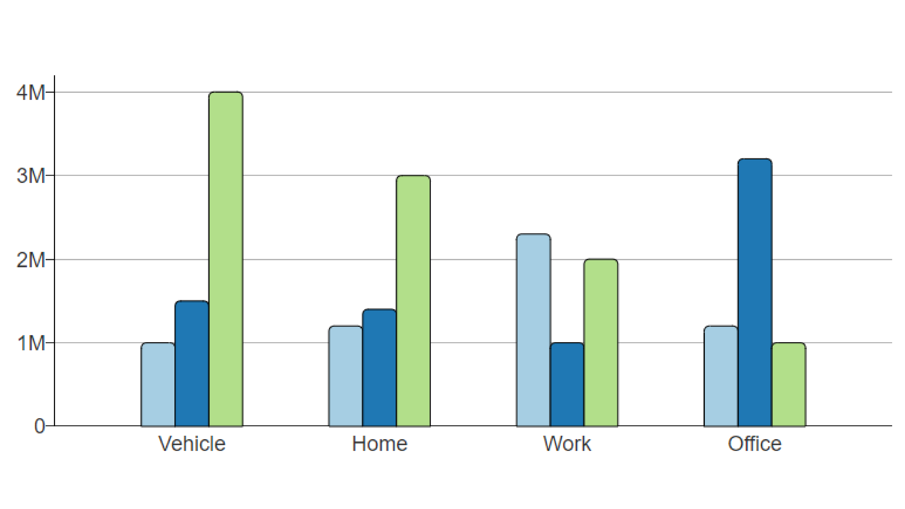
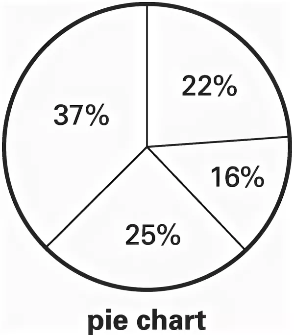
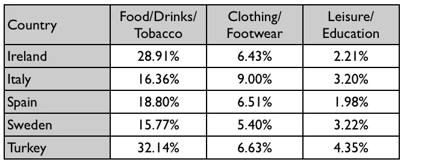
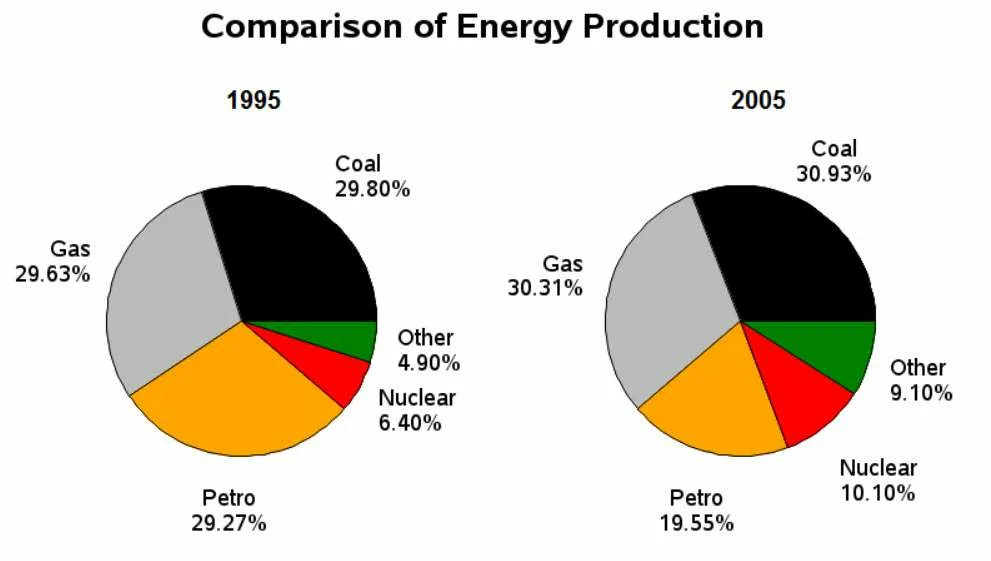
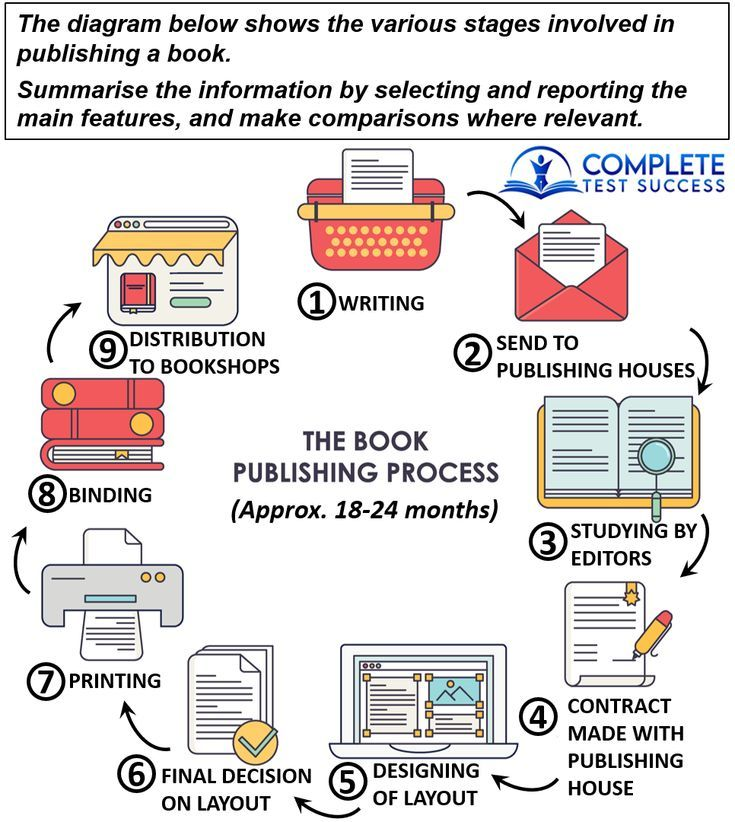

Перед изучением как писать Эссе для Writing вам нужно учесть эти условия на Writing Task
- Всего на оба задания Writing даётся ровно 1 час после чего вы сдаёте свои бумаги (20 Минут на Task 1, 40 на Task 2)
- На каждое задание имеется минимум слов которые нужно успеть написать (150 Слов для Task 1 и 250 Для Task 2)
- Нужно учесть что IELTS имееют разные виды ЭССЕ которые надо учесть
Структура Эссе Writing Task 1
- Introduction
- Overview
- Body Paragraph 1
- Body Paragraph 2
На данном этапе нужно кратко показать экзаменатору о чём был график.
в это обычно входит:Перефразирование вопроса выданого вам (без полного копирования слов из оригинального вопроса),
при этом НЕЛЬЗЯ добавлять своё собственное мнение.
Тут надо будет написать все тендеций, закономерности в данных которые вам были отданы для анализа.
Также вам нужно упоминуть наименьшие и наибольшие значения которые вы сможете обнаружить в информациий предоставленой вам.
Тут надо будет подробно описать информацию которую вам отдали на графике. Тут обязательно должны быть точные цифры
и информацию, а также изменения между двумя разными точками времени.
Тут всё точно так же как и в первом параграфе где используеться информация которая не была затронута
в первом параграфе.
Типы ЭССЕ Writing Task 1
- Line Graph
- Bar Charts
- Pie Charts
- Tables
- Comparison Of Charts
- Process Diagrams
Пример:

Обьяснение этого типа ЭССЕ:
Пример:

Обьяснение этого типа ЭССЕ:
Пример:

Обьяснение этого типа ЭССЕ:
Пример:

Обьяснение этого типа ЭССЕ:
Пример:

Обьяснение этого типа ЭССЕ:
Пример:

Обьяснение этого типа ЭССЕ: